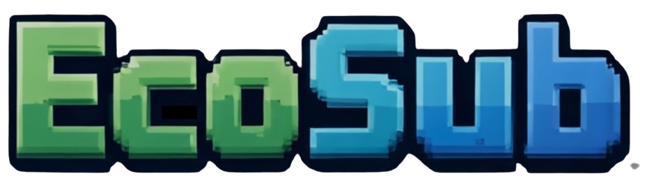
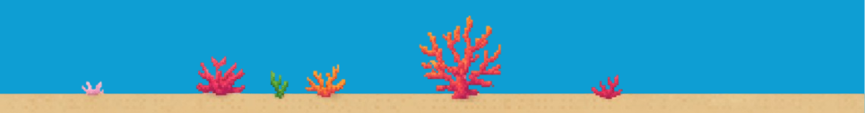

Clean the ocean. Rescue marine life. Reach the hidden cave.
Play the Game

Clean the ocean. Rescue marine life. Reach the hidden cave.
Play the Game
¡Bienvenido a bordo del EcoSub! En este emocionante juego 2D navega tu submarino a través de un océano que necesita tu ayuda. Tu misión es alcanzar la misteriosa cueva submarina mientras proteges tu nave. Tienes 3 vidas para hacerlo. Esquiva a los peces curiosos, recoge los químicos tóxicos para limpiar nuestros ecosistemas, y demuestra que eres un verdadero piloto marino.
Los peces del océano no son amistosos. Si chocas con uno, perderás una vida. ¡Mantén los ojos bien abiertos!
Recoge todos los tanques químicos y residuos peligrosos que encuentres. Cada objeto que salvas hace una diferencia real en nuestro planeta.
Tu destino final te espera en la cueva submarina. Completa tu misión con vidas restantes y habrás ganado. Eres un héroe marino.
Es simple: el océano fluye constantemente delante de ti mientras tú controlas hacia dónde va tu submarino (arriba o abajo). El mundo se mueve automáticamente, creando la sensación real de que estás viajando en una verdadera aventura submarina. Los objetos aparecen dinámicamente—algunos te ayudan, otros te desafían. Tú decides cómo reaccionas.
Llega a la cueva con al menos 1 vida y salva el océano
Pierde tus 3 vidas antes de completar tu misión
Ve cuánto limpiaste y celebra tu logro ambiental

Construyó toda la mecánica del juego, el motor y los sistemas. Ella es la arquitecta detrás de cada movimiento, colisión y desafío que enfrentas.
Creó todo el arte asombroso que ves: los sutiles gráficos, el diseño de la interfaz y la magia visual submarina. Ella da vida a EcoSub.